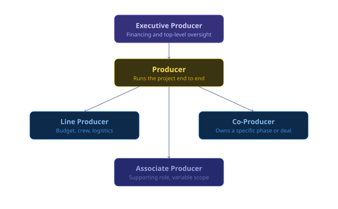

Every film starts with someone asking: Can we make this? Learn what a film producer actually does, and simulate the process of producing a film — from development to distribution.
Behind every film you've ever loved, there was someone managing the chaos, protecting the budget, and making sure the whole thing didn't fall apart. That person is the producer. They don't write the script. They don't direct the actors. They're the ones who greenlight the dream — and the last ones standing when it falls apart.
A film producer oversees a movie from its earliest idea all the way through to the screen. They develop the concept, secure financing, assemble the creative team, manage the budget, and make hundreds of decisions that shape what audiences see. Unlike a director who focuses on creative vision on set, the producer is always thinking about the whole picture: time, money, people, and what the story needs to survive contact with reality.
It's one of the most misunderstood roles in the industry. A producer might spend three years developing a script before a camera rolls. They may personally guarantee a loan to keep production alive. The same credit can mean very different things depending on the project — which is why understanding the different types matters.

Role
Secures financing and provides top-level oversight of the project. Often has existing studio or business relationships that make them valuable to attach early. May not be present on set or involved in day-to-day decisions.
Role
The person actually running the project from start to finish. Responsible for creative, logistical, and financial decisions at every stage, from the first script draft through to the final distribution deal.
Role
Manages the physical reality of production. Oversees crew schedules, vendor contracts, location logistics, and tracks the budget line by line to make sure the money matches the plan.
Role
Shares producing responsibilities with the lead producer, often taking ownership of a specific phase or component of the project such as financing, a particular location, or a segment of post-production.
Role
A supporting producing role with a variable scope. It can reflect a genuine and significant contribution to the project, or in some cases it is a credit negotiated as part of a deal rather than tied to specific duties.
Every film moves through five phases. Each has different pressures and different decisions. The producer is present for all of them. Click any stage to expand it.
Where the idea is born, and where most ideas die. The producer finds or commissions a script, options the rights, and spends months testing whether the concept is commercially and creatively viable. Financing must be assembled, often from multiple sources, and key attachments like a director or lead actor can make or break the project. About 98% of developed projects never make it past this stage. The ones that survive do so because a producer refused to let them disappear.
Everything that must be locked before a single frame is shot. The producer finalizes the budget, hires department heads, scouts and secures locations, and builds the shooting schedule around the director's vision and the financial reality. Cast deals are negotiated, equipment is sourced, and contingency plans are made for everything that could go wrong. Every decision made here ripples forward through the entire production. A week saved in pre-production can save ten days on set and hundreds of thousands of dollars.
Principal photography has begun and the clock is running. The producer is on call at all hours, approving overages, resolving conflicts between departments, keeping the director on schedule, and making real-time decisions that affect both the creative outcome and the budget. Every day on set costs money, and the producer is the person responsible for making sure that money is being spent well.
The raw footage becomes a film. Editing begins immediately, often while production is still ongoing, followed by VFX, sound design, original score, and color grading. The producer manages multiple rounds of cuts, coordinates feedback from financiers and distributors, and keeps the post schedule on track. On large productions this phase can last six months to over a year.
The finished film finds its audience. The producer works closely with distributors, shapes the festival strategy, and coordinates with marketing teams on positioning and rollout. A great film with poor distribution quietly disappears. This stage determines whether the work reaches the people it was made for, and whether it earns back what it cost to make.
Budget determines almost everything: who you can cast, where you can shoot, how long you have. Understanding budget tiers explains why certain films get made the way they do. Budget isn't just money. It's the grammar of the project.
Micro budget
Very low-cost indie films, typically using few locations, skeleton crews, and deferred pay. Often self-distributed or festival-only.
Low budget
Typical independent productions, often using SAG-AFTRA low-budget agreements. Real crew, modest cast, festival circuit as primary target.
Mid budget
Pre-sales films and specialty studio projects. Named cast, professional departments, real post schedule. High stakes but still agile.
Studio
Standard studio-backed productions with full department infrastructure and A-list talent. The producer manages a large institution as much as a film.
Blockbuster
Franchise blockbuster films with global stars. Extensive VFX, international locations, 12+ week shoot.
eg. Avengers: Endgame ($356M), Avatar ($237M)
Every producer works with the same core set of instruments — financial, legal, and creative. These are the ones that come up on every project.
| Tool | Type | What it does |
|---|---|---|
| Tax Credit | Financial | Recovers a percentage of local production spend through government incentives. One of the most reliable ways to reduce effective budget. |
| Gap Financing | Financial | A loan covering the difference between confirmed pre-sales and total budget. Lenders bet that unsold territories will generate enough to repay it. |
| Pre-Sales | Financial | Selling distribution rights in specific territories before production begins, giving producers upfront cash to finance the shoot. |
| Option Contract | Legal | Paying a fee to exclusively control a property for a set period, typically 12 to 18 months, while developing it toward production. |
| Talent Deal | Legal | A contract defining an actor or director's fee, credit, creative approvals, and any backend participation in profits. |
| SAG-AFTRA | Legal | Signing with the performers union sets minimum pay rates and working conditions. Most professional US productions are signatory. |
| Shooting Schedule | Creative | Maps out when and where each scene films, balancing actor availability, location costs, and daylight against the director's vision. |
| Production Bible | Creative | A reference document capturing the vision, tone, world, and characters of a project. Used to align the team and pitch to financiers. |
The director pursues a vision. The producer makes that vision possible within real-world constraints. A director might want three more days to reshoot a key scene. The producer has to weigh that against a $50,000-a-day burn rate, a cast availability window closing at the end of the week, and a post-production schedule that is already compressed.
The best producer-director relationships are built on deep mutual trust. The director trusts that the producer will protect their vision from budget pressures, studio interference, and the hundred small compromises that production demands. The producer trusts that the director knows what the film needs, and that when they push for something, it matters. When that trust breaks down, the film usually shows it.
The producer credit is one of the most misapplied in the industry. It gets attached to financiers, rights holders, and people who introduced two other people at a party. Understanding what the credit actually means helps clarify what the job really is.
MYTH: Producers just write checks
Most producers don't fund films from their own pocket. They raise money — from studios, investors, tax incentives, and co-production deals. The financial work is architecture, not a personal ATM.
MYTH: The director is in charge
On set, yes. But the producer hired the director. In a financial dispute, the producer often has final say, especially on budget decisions.
MYTH: Executive producer = more important
Not necessarily. Executive producers often provide financing but aren't involved day-to-day. The producer actually running the project may have less impressive-sounding credit.
MYTH: Producers are only there during shooting
Production is where the producer's prep pays off. The real producing happens in development and pre-production, often years before anyone says action.
Your final outcome is determined by two stats: remaining Budget and Risk. Time and progress track the health of your journey but don't gate the final result. What determines whether your film gets released is whether you have money to release it (budget) and whether your production is stable enough for distributors to want it (risk).
Tier 1 - Best
Budget > $1,400K
Risk < 40
Your film opens in over 1,200 theaters and critics are calling it a revelation. Two studios have already reached out about your next project.
You made disciplined decisions throughout and protected your budget. Low risk means no compounding crises, you solved problems before they spiraled. Films that hit wide release aren't always the most ambitious. They're the ones where the producer never let a single bad decision compound.
real-world parallel
Everything Everywhere All at Once (2022)
Made for around $14M by A24 with the Daniels directing. A disciplined limited-to-wide release strategy turned it into the most awarded film in Oscar history and a genuine cultural phenomenon.
Tier 2 - Strong
Budget > $900K
Risk < 60
The film premieres at a Tier 1 festival and streaming rights sell within the week. Not the wide release you looked for, but it got made and found its audience.
You made mostly solid decisions but absorbed a few costly hits along the way. Risk crept up through compounding choices rather than one catastrophic call. The story was strong enough to survive the turbulence, but by distribution the numbers did not support a wide push.
real-world parallel
Moonlight (2016)
Produced for $1.5M under constant budget pressure, Barry Jenkins and producer Adele Romanski kept every decision tight. It premiered at Telluride, sold to A24 for a careful limited release, and won Best Picture.
Tier 3 - Modest
Budget > $400K
Any risk level
The film plays in around 40 cities and finds a small but devoted audience. You learned more making this than any amount of planning could have taught you.
Your production survived but was significantly drained at some point along the way, likely by at least one decision that compounded badly when you could least afford it. Limited release is not failure. Most independent films never get this far. But the path here usually involved a ghost rewrite, waiting out the no-show, or going fully theatrical with a budget that could not support it.
real-world parallel
Beasts of the Southern Wild (2012)
Shot for under $2M in genuinely brutal conditions with a non-professional cast, producer Dan Janvey held the production together through constant logistical crises. It earned an Oscar nomination and became a cult classic precisely because of the constraints it refused to be defeated by.
Tier 4 - Worst
Budget ≤ $400K
Any risk level
The film never reaches release. Budget overruns and distribution problems pulled it under before it could find an audience. The question now is what you do next.
You ran out of money before the film could reach an audience. This almost always comes from a cluster of expensive early mistakes that compounded without a recovery window between them. Each individual decision might have been survivable on its own. Together they were not.
real-world parallel
The Man Who Killed Don Quixote (2000-2018)
Terry Gilliam's passion project collapsed on day two of principal photography due to a flash flood, a lead actor's injury, and military jets ruining the location sound. Legal battles and budget crises kept it in limbo for 18 years. It finally released in 2018, not the film anyone intended to make.
Hi, I'm Scarlett Jiang, a student at Boston University. PRODUCE. is my project for CM523, where I'm using interactive web design to explore film production through both learning content and simulation. My goal was to create something that is informative, but still feels engaging and immersive rather than just explanatory.
The idea came from my background in film and television, and from my interest in the producer's role in particular. When people think about movies, they usually think first of directors, actors, or what appears on screen. The work of producers is easier to overlook, and a lot of people are not really sure what that role includes. I wanted to build something that makes that part of filmmaking easier to understand by showing how producers shape a project from early development to final release.
The following documents cover the full development process behind PRODUCE., from initial concept through design, testing, and production.
Document
Initial project proposal outlining the idea and direction for PRODUCE.
Document
Early layouts and structural plans for the learning page and simulation experience.
Document
Documentation covering the visual style, interface system, and design decisions behind the project.
Document
Testing results and feedback gathered from users interacting with the project.
Document
Documentation of how AI tools were used in parts of the project development process.